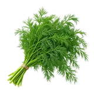

होम / सुआ पत्ती

सुआ पत्ती का भाव आज | Dill Leaves Rate Today
सुआ पत्ती का भाव आज का राजस्थान के प्रमुख शहरों से देखें। जोधपुर, नागौर, बीकानेर, बाड़मेर, जैसलमेर सहित सभी शहरों से सुआ पत्ती के रेट और बाजार विश्लेषण।
नीचे दिए गए शहरों में सुआ पत्ती के आजकल चल रहे भाव दिए हैं। यह शहर और थोक बाज़ार का भाव है, किसी मंडी की नीलामी का रिकॉर्ड नहीं।
सुआ पत्ती (शेपू भाजी) मंडी भाव आज: आज़ादपुर, मुंबई APMC, पुणे रेट
राम राम किसान भाइयों!
देशभर की हरी सब्जी मंडियों और एपीएमसी (APMC) यार्ड्स में सुआ पत्ती (Dill leaves) एक बेहद संवेदनशील, विशिष्ट सुगंध वाली और दैनिक नकदी प्रवाह देने वाली प्रमुख पत्तेदार फसल है। क्षेत्रीय मंडियों और खानपान की आदतों के अनुसार इसे सुवा भाजी, सोआ का साग, सवा पत्ती और महाराष्ट्र-कर्नाटक के बाजारों में शेपू भाजी (Shepu Bhaji) या सब्बक्की के नाम से जाना जाता है। जहां उत्तर भारत की आजादपुर (दिल्ली), मुहाना (जयपुर) और दुबग्गा (लखनऊ) मंडियों में इसे मुख्य रूप से आलू-सोआ की सब्जी व साग के लिए थोक में खरीदा जाता है, वहीं पश्चिमी व दक्षिणी भारत की प्रमुख मंडियों—जैसे मुंबई एपीएमसी (वाशी), पुणे (गुलटेकड़ी व खडकी), नासिक और राहूरी में शेपू की दैनिक नीलामी बड़े पैमाने पर होती है। इसकी पत्तियां ताजी हालत में जितनी तेजी से बिकती हैं, डिहाइड्रेटेड (सूखी पत्तियों) और हर्बल एक्सट्रैक्ट उद्योग में भी इसकी मांग सालभर बनी रहती है।
सुवा पत्ती (शेपू/सोआ) का व्यापारिक ढांचा: गड्डी की नीलामी बनाम प्रति किलो का भाव
हरी पत्तेदार सब्जियों की मंडियों में सुआ पत्ती का व्यापार दो अलग-अलग व्यापारिक इकाइयों में चलता है:
- थोक मंडियों में गड्डी (पेंडी) व क्विंटल का सौदा: महाराष्ट्र और गुजरात के एपीएमसी यार्ड्स में शेपू/सुवा भाजी का सौदा प्रति 100 गड्डी (पेंडी) या वजन के आधार पर प्रति क्विंटल तय किया जाता है। किसान आमतौर पर 150 से 250 ग्राम की गड्डियां बनाकर जालीदार कैरेटों में लाते हैं। थोक व्यापारी और उपभोग केंद्रों के दलाल पत्तियों के हरे रंग, ताजगी और वजन को देखकर 50 या 100 गड्डियों के पूरे लॉट पर एकमुश्त खुली बोली लगाते हैं।
- खुदरा मंडियों व क्विक-कॉमर्स में प्रति किलो और पैकेट भाव: स्थानीय सब्जी दुकानों, ठेलों और आधुनिक डिलीवरी प्लेटफॉर्म्स (जैसे Zepto, Blinkit या सुपरमार्केट्स) पर आम उपभोक्ता इसे 100 ग्राम से 250 ग्राम के पैकेट या प्रति किलो भाव से खरीदता है। थोक नीलामी दर और खुदरा कीमत के बीच स्थानीय परिवहन, मंडी आढ़त, पल्लेदारी और जल्दी मुरझाने के कारण होने वाली छीजत (Weight Loss) का मार्जिन जुड़ा होता है। जो किसान अपनी उपज को खेत से ही साफ करके और मानक वजन की गड्डियों में बांधकर लाते हैं, उन्हें व्यापारी बिना किसी वजन कटौती के शीर्ष भाव देते हैं।
सुआ पत्ती (शेपू भाजी) के मंडी भाव तय करने वाले प्रमुख व्यापारिक मानक
हरी भाजी का जीवनकाल केवल कुछ घंटों से एक दिन का होता है, इसलिए मंडियों में इसके दाम इन बुनियादी गुणवत्ता मानकों से तय होते हैं:
- पत्तियों का प्राकृतिक हरापन और ताज़ा खिंचाव: मंडी में गाड़ी खाली होते ही खरीदार सबसे पहले पत्तियों की चमक और रंगत देखते हैं। चटक गहरा हरा रंग और सख्त पत्तियां प्रीमियम भाव दिलाती हैं। यदि पत्तियों पर पीलापन आ चुका हो, पानी की अधिकता से सड़न शुरू हो गई हो या वे मुरझा चुकी हों, तो भाव आधे से भी कम रह जाते हैं।
- डंठल की कोमलता बनाम कड़ापन: रसोई और होटल व्यापार में केवल पतले और मुलायम डंठल वाली सुवा पत्ती की ही मांग रहती है। यदि फसल की तुड़ाई सही समय पर की गई है और उसमें फूल (छत्ता) नहीं निकला है, तो वह सबसे ऊंची श्रेणी में बिकती है। फूल आने के बाद पत्तियां कड़वी और डंठल रेशेदार हो जाते हैं, जिसे व्यापारी रिजेक्ट लॉट में डाल देते हैं।
- जड़ों की सफाई और मिट्टी-खरपतवार से मुक्ति: खेत से उखाड़ते समय जड़ों में चिपकी गीली मिट्टी और बीच में शामिल घास-फूस माल का वजन तो बढ़ा देती है, लेकिन बोली के समय व्यापारी भारी कटौती करते हैं। साफ पानी में धुली हुई और जड़े तराशी हुई गड्डियों को छांटने में व्यापारियों का समय बचता है, जिससे वे उस पर सबसे ऊंची बोली लगाते हैं।
- मौसम का दबाव और दैनिक आवक का समीकरण: सर्दियों के महीनों में जब स्थानीय खेतों से भरपूर आवक मंडियों में उतरती है, तो थोक भाव प्रतिस्पर्धी रहते हैं। वहीं अधिक गर्मी, भारी बारिश या पाला पड़ने के समय जब खेतों से कटाई रुक जाती है और मंडियों में दैनिक आवक घटती है, तब शेपू/सुवा पत्ती के दाम तेजी से उछलकर रिकॉर्ड स्तर छू लेते हैं।
- हवादार पैकेजिंग का महत्व: प्लास्टिक के बंद कट्टों में भरकर लाया गया माल अंदरूनी गर्मी और भाप से काला पड़ जाता है। इसके विपरीत, प्लास्टिक की जालीदार क्रेट्स या बांस की हवादार टोकरियों में करीने से सजाकर लाई गई गड्डियां लंबी दूरी के सफर में भी ताजी बनी रहती हैं, जिससे खरीदार बिना संकोच ऊंची कीमत चुकाते हैं।
सब्जी उत्पादकों के लिए अधिकतम भाव पाने की व्यावहारिक रणनीति
सुआ पत्ती से पूरा मुनाफा निकालने के लिए खेत से लेकर मंडी के चबूतरे तक का समय प्रबंधन सबसे अहम है:
- तुड़ाई का सटीक समय: सुवा पत्ती की कटाई हमेशा अलसुबह (सूरज निकलने से पहले) या देर शाम के समय करें। तेज धूप में तुड़ाई करने से पत्तियों की नमी तुरंत उड़ जाती है और वे मंडी पहुंचने से पहले ही मुरझा जाती हैं, जिससे वजन और भाव दोनों का नुकसान होता है।
- फूल खिलने से पहले कटाई: पौधों में फूल का छत्ता बनने से पहले ही पत्तियों की कटाई पूरी कर लें। फूल निकलने के बाद पत्तियों का तीखापन बिगड़ जाता है और मंडी में खरीदार कड़े डंठल देखकर बोली गिरा देते हैं।
- गड्डियों की सफाई और छंटाई: कटाई के तुरंत बाद पीली, सूखी या कीड़े लगी पत्तियों को अलग कर दें। साफ पानी का हल्का छींटा देकर एकसमान वजन (200 से 250 ग्राम) की गड्डियां सुतली से बांधें। एकसमान और साफ गड्डियों का लॉट देखते ही आढ़तियों के बीच प्रतिस्पर्धा बढ़ती है।
- हवादार क्रेट्स का उपयोग: गड्डियों को बंद बोरियों में दबाकर भरने से बचें, क्योंकि बंद बोरी के भीतर पैदा होने वाली गर्मी पत्तियों को कुछ ही घंटों में सड़ा देती है। जालीदार क्रेट्स का उपयोग करें ताकि हवा का आवागमन बना रहे।
- सुबह की पहली नीलामी में पहुंचना: थोक सब्जी मंडियों में सुबह 4 से 6 बजे के बीच सबसे अधिक खुदरा व्यापारी और होटल सप्लायर सक्रिय रहते हैं। अपनी गाड़ी समय पर मंडी में उतारें ताकि शुरुआती नीलामियों में माल रखकर दिन का सबसे ऊंचा और प्रतिस्पर्धी भाव हासिल किया जा सके।
अक्सर पूछे जाने वाले सवाल
सुआ पत्ती का भाव किलो में क्यों देखा जाता है?
सुआ पत्ती ताजी हरी सब्जी है, इसलिए उसका भाव प्रति किलो समझना अधिक उपयोगी रहता है। इसे सूखे सुआ बीज के क्विंटल भाव से न मिलाएं।
सुआ पत्ती किस मौसम में मिलती है?
सुआ पत्ती की उपलब्धता स्थानीय मौसम और आवक पर निर्भर करती है। सर्दियों में इसकी आवक आम तौर पर अधिक दिख सकती है, लेकिन मंडी-वार स्थिति अलग रहती है।
अच्छी सुआ पत्ती की पहचान क्या है?
ताजी हरी, कोमल, साफ और बिना मुरझाई पत्तियों वाले बंडल बेहतर गुणवत्ता में माने जाते हैं। ज्यादा पीली पत्तियां या दबे हुए बंडल का भाव अलग हो सकता है।